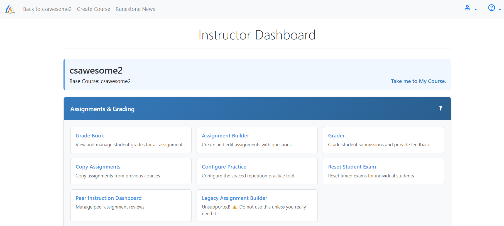
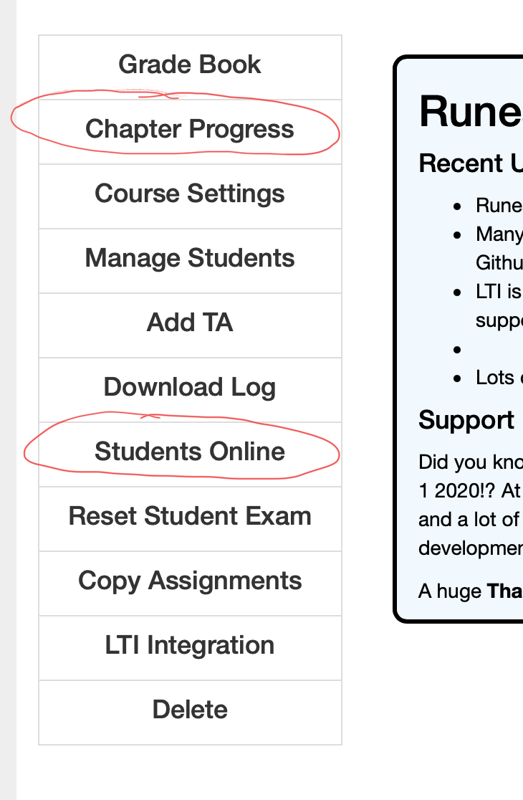
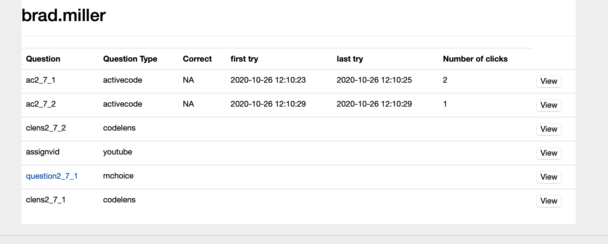
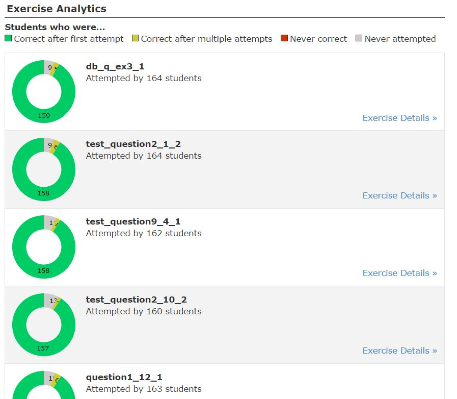
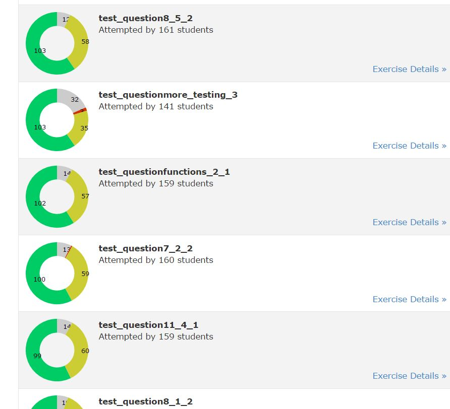
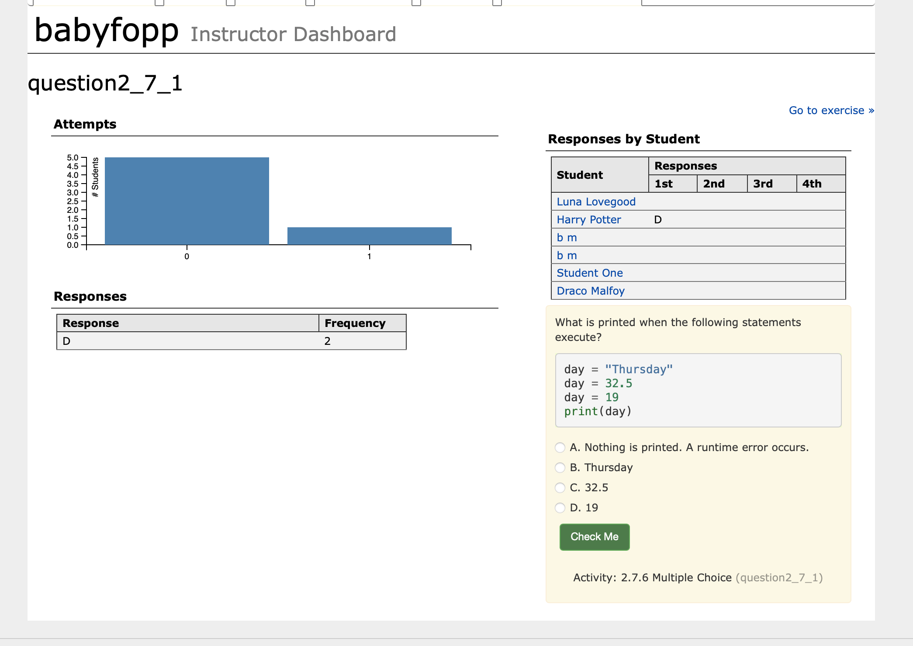

Chapter 5 Monitoring your Student’s Learning
Section 5.1 The Instructor Interface
One of the primary goals of the Runestone Instructor Interface is to help you understand where your students are at, and to help you to prepare and make the best use of classtime. We set out to create an interface where you could see at a glance which concepts your students clearly “got” and which concepts they were struggling with so that you can spend your valuable class time on the topics that were confusing rather than boring them by covering material they clearly understand. To really be effective with this strategy you should use reading assignments as described in Section 6.1.
As an instructor, you can access a variety of instructor features. To get to the instructors page follow these steps:
- Make sure you are logged in to a course for which you are an instructor. If necessary, click on the person icon at top right and select Change Course to get to a course that you are instructor for, or logout and login with a different account.
-
Click on the person icon on the top right of the window and select Instructor’s Page

Figure 5.1.1. Figure 1: How to get to the instructor’s page You will see the instructor page as shown below. You may be on a different tab that what is shown below.Figure 5.1.2. Figure 2: The Instructor’s Page
Section 5.2 View Student Activity
Subsection 5.2.1 Introduction
Many actions that students take are logged. These include:
- Loading a book page
- Answering a multiple choice question
- Answering a mixed-up code (Parsons) problem
- Running code in an ActiveCode window
- Editing code in an ActiveCode window
- Playing a video
There are many ways to monitor student progress. Starting at the main instructor page here are two of them.

Subsection 5.2.2 Chapter Progress
One very easy to use report that allows you to quickly see how much work your students are doing on each page is the Chapter Progress Report. It looks like this:

It can quickly show you the number of elements on each page that your students have interacted with. The dropdown menu gives you other options such viewing the first time a student interacted with an element, the last time a student interacted with the element, and an overview of the number of times a student has interacted. You can also filter by chapter or any other search criteria using the popup menu on the chapter_label column. Just experiement a bit.
The numbers in each cell are clickable so you can drill down into a particular page for a particular student to see what they have done and the number of interactions with each element.

You can even click the view button to see a preview of the activity. Clicking on the Question link will bring you the summary page for that activity where you can see an aggregate of how all students performed on that question. We’ll see more about that report shortly.
Subsection 5.2.3 Student Progress Tab
The instructor interface lets you see summaries of some of these activities that may be useful to you. To get started, from the instructor interface, click on the Student Progress tab.
- If you have assigned students to read a particular chapter prior to (or after) class, you can see at a glance what percentage of them have looked at each of the pages in a chapter. In the upper right hand corner, you can select a chapter. Then look at the left side.

- You can see how students did on the multiple choice problems in the chapter. Some instructors have found it useful to focus in class on those questions where many students got the question wrong initially. Currently, the interface sorts the questions in order of the percentage of students who got them right the first time, so you may want to scroll down to find the ones they had trouble with.



This page is further drilldown on an individual question. You can see a histogram of the number of attempts made on the question across the class, you can see the frequency with which each option was selected, and you can see the first four responses of each student. You can also see a preview of the question.